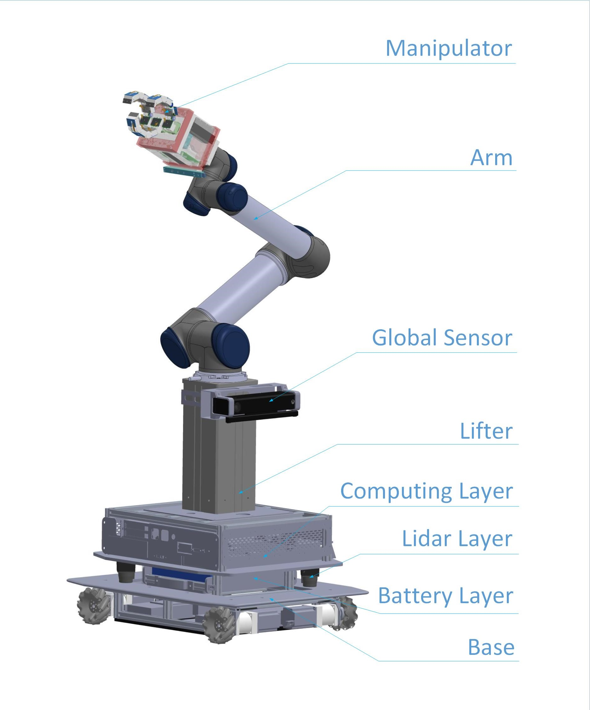
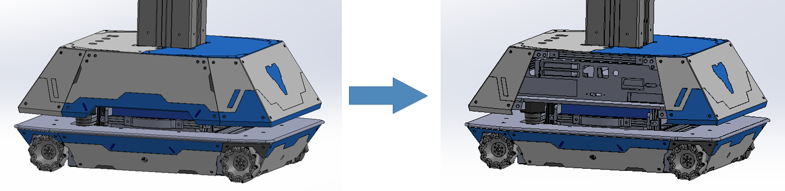

Mechanical Overview¶
The mechanical structure of MOMA in general is shown as the picture below.
{kind=link}
Runner¶
Runner contains four layers: mobility layer, battery layer, lidar layer and computing layer.
Mobility Layer¶
Mobility Layer provides three-DOFs (degrees of freedom) mobility for MOMA using four mecanum wheels which allow it to move on plane surfaces. There are four infrared TOF (Time Of Flying) sensors, one on each of the four sides of Mobility Layer, to detect the distance between MOMA and nearby obstacles. The base board has a bumper around its outer edge. In case MOMA runs into an obstacle, it will cut the power off to protect it against possible damage.
Battery Layer¶
- Function
Battery Layer provides power to all systems of MOMA. It houses two batteries that are rechargeable and removable.
- Removing the Batteries
When removing the battery layer for maintenance: (1)- Unlock the two protruding pin-screws beside the battery box (pull the screw out and turn it 90-degree clockwise); (2)- Disconnect all cables from the battery; (3)- Pull the battery box out using the handle attached to its front side. Follow the steps reversely when sliding into the battery layer.
Lidar Layer¶
Lidar Layer provides MOMA a global but planar view around the robot itself. It uses two 240-degree lidars symmetrically installed on the lidar board. The overlapping fields of view of the two lidars ensure 360 degree planar view around the robot with no blind spots outside the footprint of MOMA.
Computing Layer¶
Computing Layer includes almost all of the electronic components of MOMA, such as the motherboard of the on-board computer and the control cards of the robot arm. Computing Layer acts as the brain of MOMA thus it is vital to protect it. This layer is fixed to the layers below and should not be opened or disassembled. The interface for attaching auxiliary devices to the computer is on the side. To access the ports on the interface, remove the shell plate as the following picture shows first by removing the bolts on the plate.
{kind=link}
Lifter¶
Lifter provides an extra DOF along Z-axis. It can supplement the height of the arm by 250 mm. The actuator inside the aluminum column can raise the arm up or lower it down at a constant speed. An infrared TOF sensor installed inside the column provides feedback for real-time height control.
Arm¶
The arm on MOMA is UR5, a product of Universal Robots. Specifications of UR5 are available through the following link: https://www.universal-robots.com/media/1514597/101081_199901_ur5_technical_details_web_a4_art03_rls_eng.pdf.
Dorabot_hand3_pro¶
Dimensions of Dorabot_hand3_pro¶

Names of jonits on each finger:¶

Features and Benefits¶
Modular 3D-Printed Design:
Can be easily modified by Dorabot for possible future improvements.
Fully Actuated Phalanges:
Provides full control to perform dexterous tasks.
Tendon-Sheath Force Transmission:
Keeps the design compact.
Multitude of Sensors:
Provide various feedbacks to help achieve the desired grasp.
Specifications¶
| Specifications | Details |
|---|---|
| Kinematics |
|
| Range of Motion |
|
| Finger Speed |
|
| Weight | Whole hand: 2.89 kg |
| Payload | |
| Finger Force (at fingertip) | |
| Force Transmission Method | Tendon-sheath |
| Actuactor Type | Servomotor |
| Sensors |
|
| Power Support | |
| Dimensions | See Diagram above |